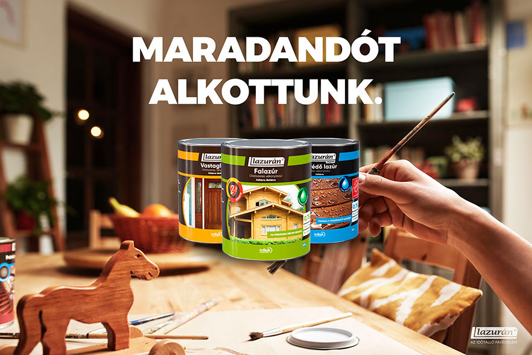

Varnishing is not fun. Totally not fun. It always starts with the “hell yes, I can surely do it myself” and as we slowly move more and more into the dirt, the tiredness and the hourly “bugger”, or occasional “for fuck sake, why now?” we often ask ourselves why did I have to even start it. But at the end we always realise...it's totally worth it.
Key Visuals
